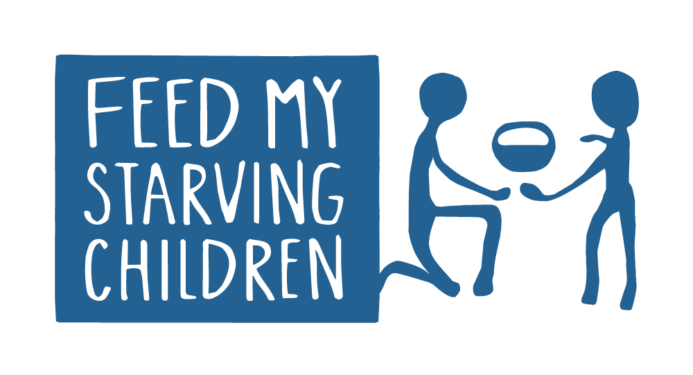

Service
Volunteer Service
For volunteer service, I have volunteered at a few different locations doing things such as packing food, directing people at a school sponsored 5k event, and running stands at local fairs. Notably, one of the more prominent volunteer organizations is Feed My Starving Children which gathers people to pack food for the malnourished. Please check them out if you have the time. In the future, I plan to be involved with more volunteer organizations such as Habitat for Humanity

Visit Feed My Starving Children
Visit Habitat for Humanity